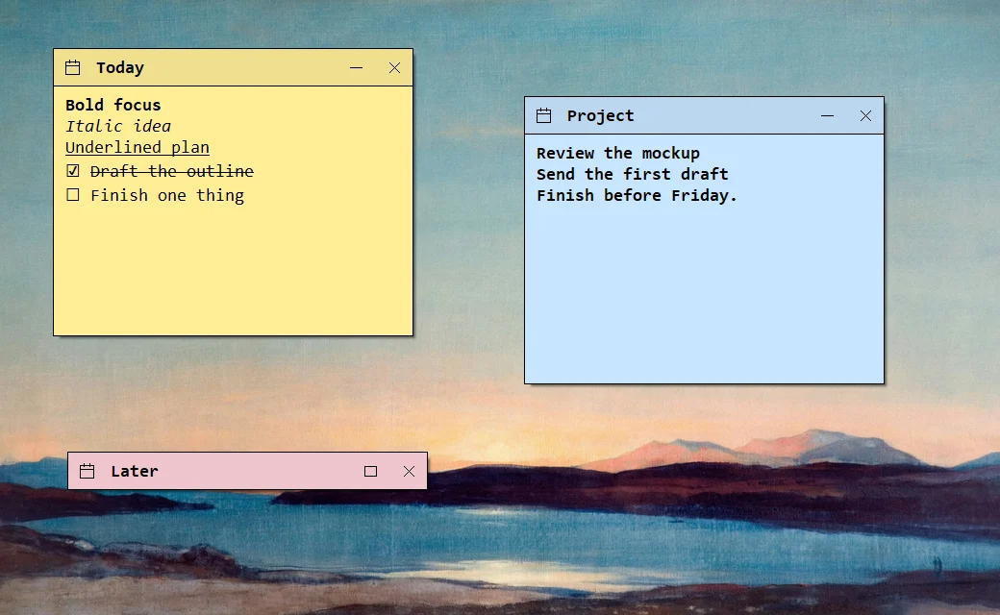

A thought, a plan, a reminder
Keep it where
Keep it where
you can see it.
An idea during a call. A line to rewrite. Something to do before you leave. Open a note and type. Jotilla saves as you go.
Leave it open, fold it down to its title, or close it into the archive for later.

